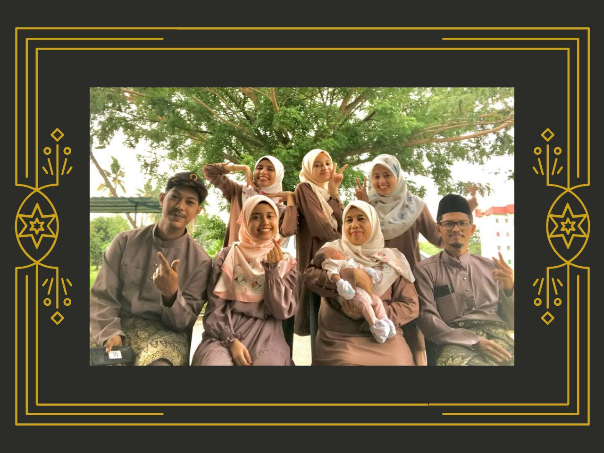

I am a self-motivated, diligent individual. History and management fascinate me tremendously. I will also be able to quickly pick up new skills and expertise.

MY FAMILY
I have 6 family members and all my siblings are girls. My older sister is married and has one child. Both my younger sisters are still study at USM and KPTM. My father work as a technician while my mother is a housewife. I am the second child in the family and study at UiTM Machang Kelantan.
Developed by Nuralisha Nasir © 2022